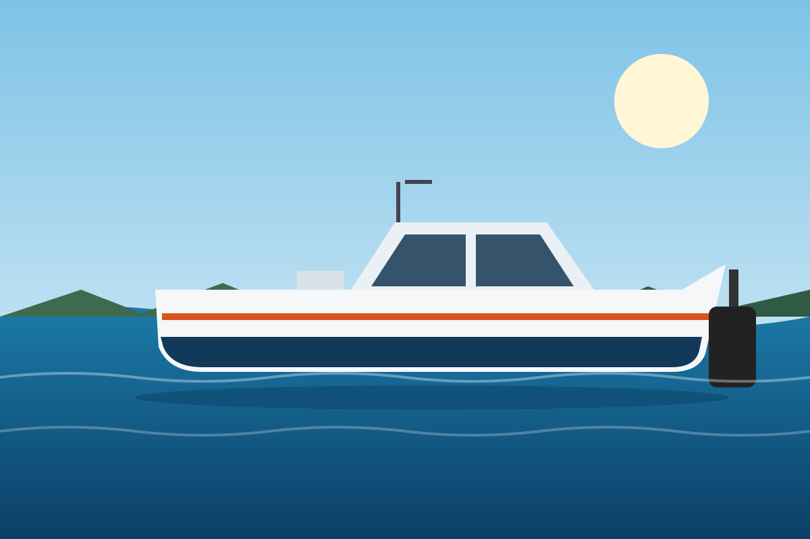
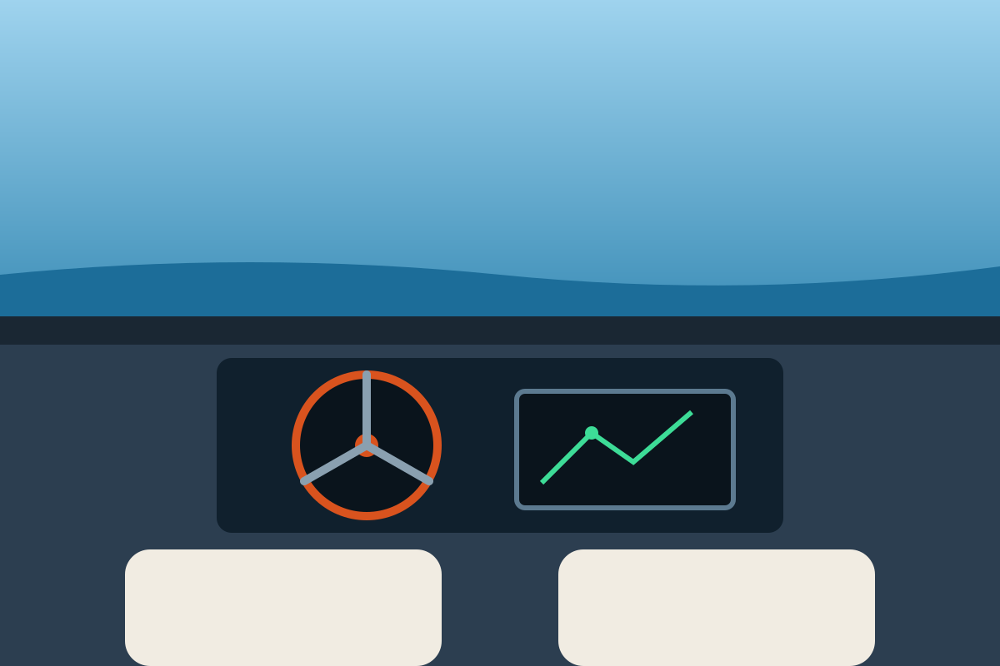
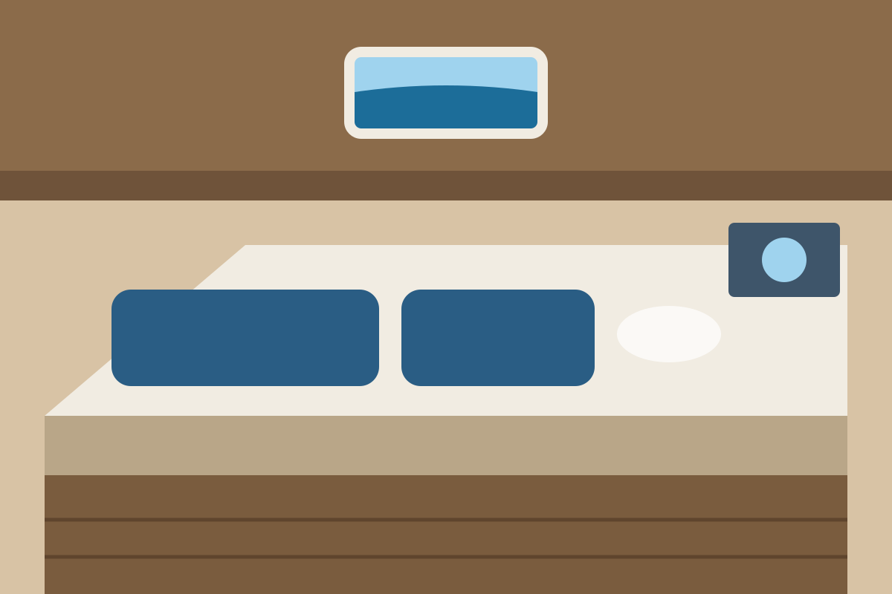

Saaristo 650 Cruiser
Matkavene, vm. 2022
34 900 €
Kuvat



Veneen kuvaus
Saaristo 650 Cruiser on monipuolinen ja turvallinen matkavene, joka sopii niin päiväretkille kuin viikonlopun saaristoreissuille. Avara ohjaamo antaa suojaa tuulelta ja sateelta, ja kajuutassa on kaksi makuupaikkaa yöpymistä varten.
Vene on ollut yhden omistajan käytössä ja talvisäilytetty sisätiloissa. Huoltohistoria on dokumentoitu, ja vene on käynyt kuntotarkastuksessa ennen myyntiä. Hintaan kuuluu perävaunu ja kuomu.